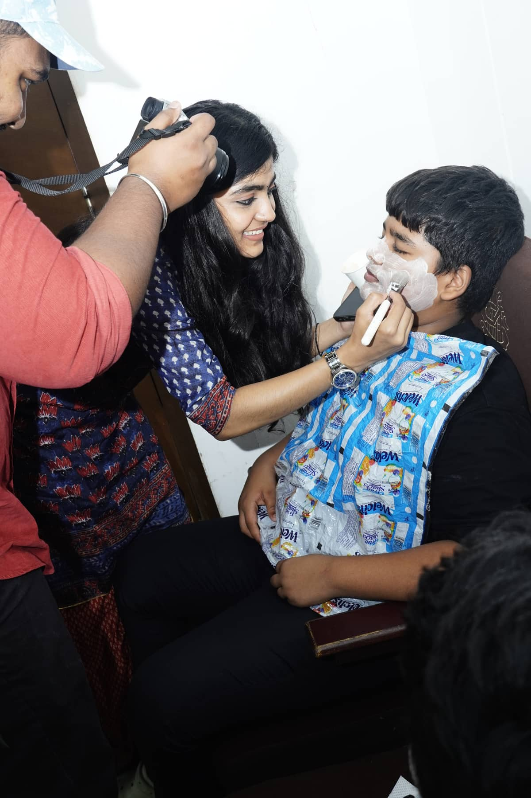

And sometimes, that idea comes from a teacher, an artist, a volunteer, a storyteller, a donor, or a child.
Bring a Civic Imagination Studio to your school. We work with schools and community spaces to create art-integrated Social Science learning experiences.
Partner With KarpanaiWe welcome people who can contribute through:
Theatre
Writing
Art
Public Speaking
Education
Documentation
Storytelling & Media
Programme Support

Your art can become a child's language.
If you are an artist, performer, writer, educator or facilitator, you can help us bring new forms of expression into classrooms.
Become a FacilitatorHelp us create more spaces where children can imagine. Your support can help bring art-integrated learning to more students from economically disadvantaged communities.
Support a Classroom